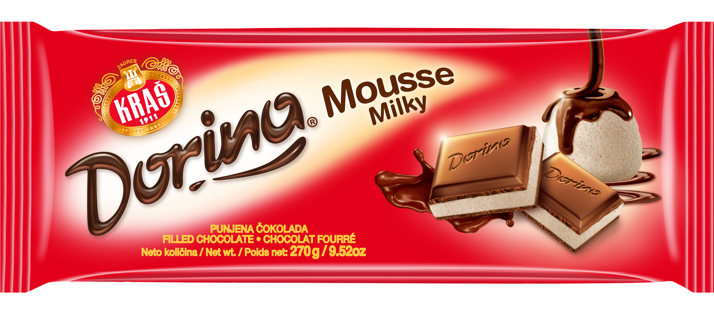
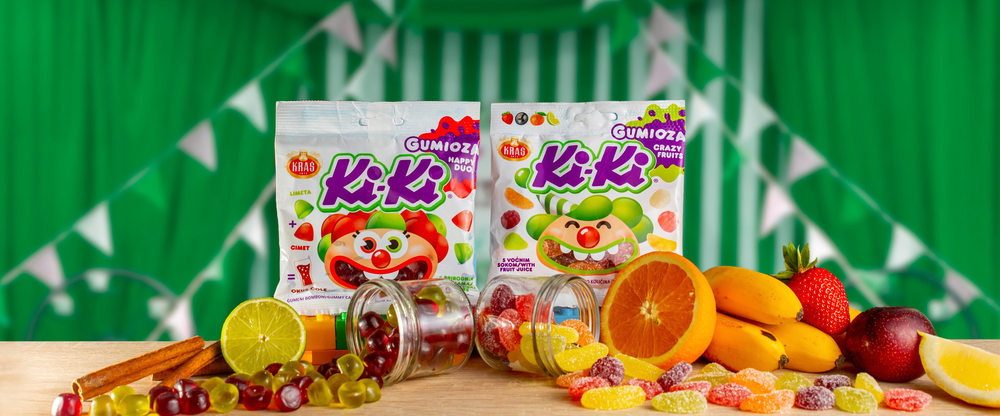

NEWS

60 godina Domaćice
Nakon razigrane proslave 60. rođendana Kraševe Domaćice u Splitu, Osijeku i Rijeci, slavljenička se atmosfera seli u Zagreb, gdje će se u subotu, 7. listopada, održati veseli spektakl s Domaćicom u glavnoj ulozi, u kojem posjetitelje očekuju brojne slatke nagrade. Slatka iznenađenja očekuju vas već od 11 sati, a početak predstave je u 12 sati.More ...

Nova Dorina-Milky Mousse
Ako ste zaljubljenik u lagane, čokoladne note i za vas bi svaka svaka kockica čokolade trebala biti baš poput lagane, pjenaste kreme koja se topi u ustima, onda ćete s ovom čokoladom itekako doći na svoje. Naši su majstori čokolatijeri s ljubavlju i strašću razvili čokoladu koja obećava novi, lakši užitak, pritom još više naglasivši puni, bogati okus čokolade. More ...

Nove Ki-Ki gumioze
Naše sočne, voćne i prirodne Ki-Ki Gumioze postale su bogatije za dva nova okusa – meki i sočni žele voćnog okusa te vrlo zanimljiv spoj dva različita bombona kojima se otkriva treći, prepoznatljiv okus cole kojeg vole i mali i veliki. Novi, razigrani klaunovi s prozorčićem u obliku širokog osmijeha pozivaju vas na zabavu uz naše ukusne gumioze. More ...

*NOVO*-Milky ZOO
Nova čokoladica Životinjsko carstvo punjena je mliječna čokoladica s likovima Životinjskog carstva. Čokoladni Krokodil Kroko, panda Amanda, žirafa Gracija, galeb Stipe i lav Leopold nalaze se na novim čokoladicama i čuvaju bogato mliječno punjenje unutar čokoladice. More ...
Bajadera - Satkana užitkom
Noseći ime zavodljive orijentalne plesačice, Bajadera iskonski, kroz svo vrijeme svog postojanja, utjelovljuje sinonim za savršen sklad i gracioznost. More ...